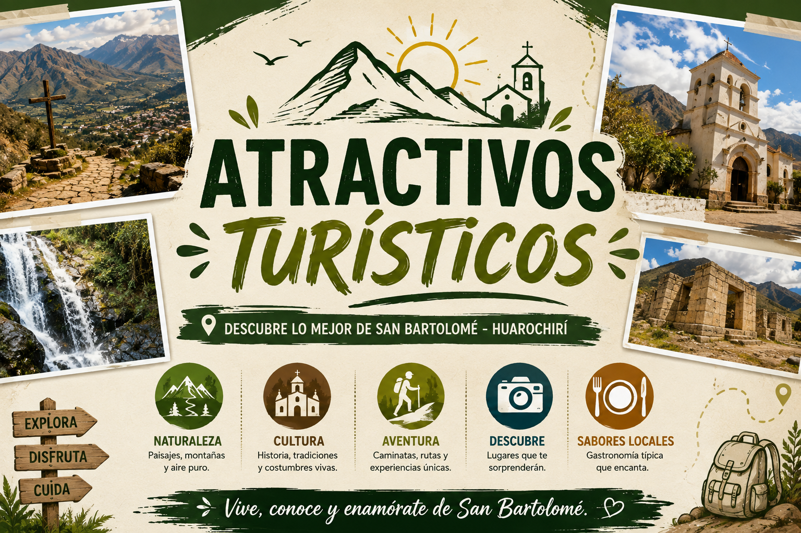
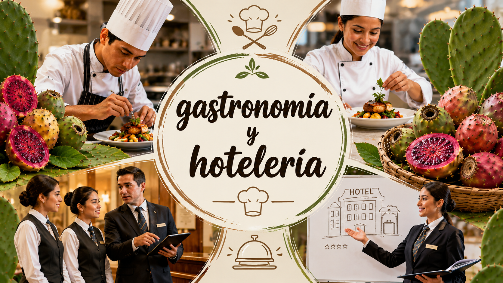
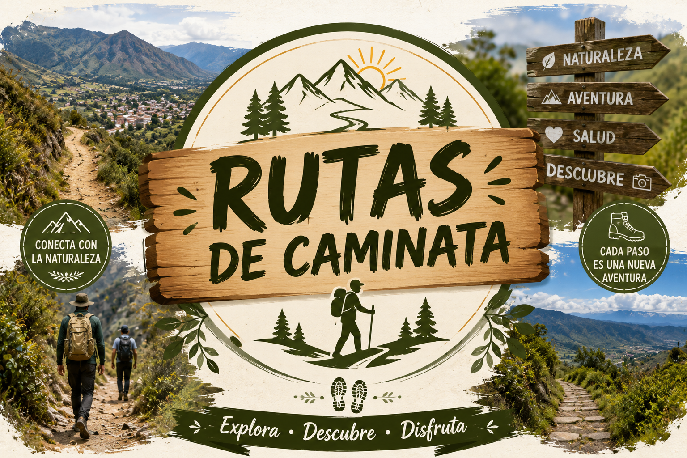
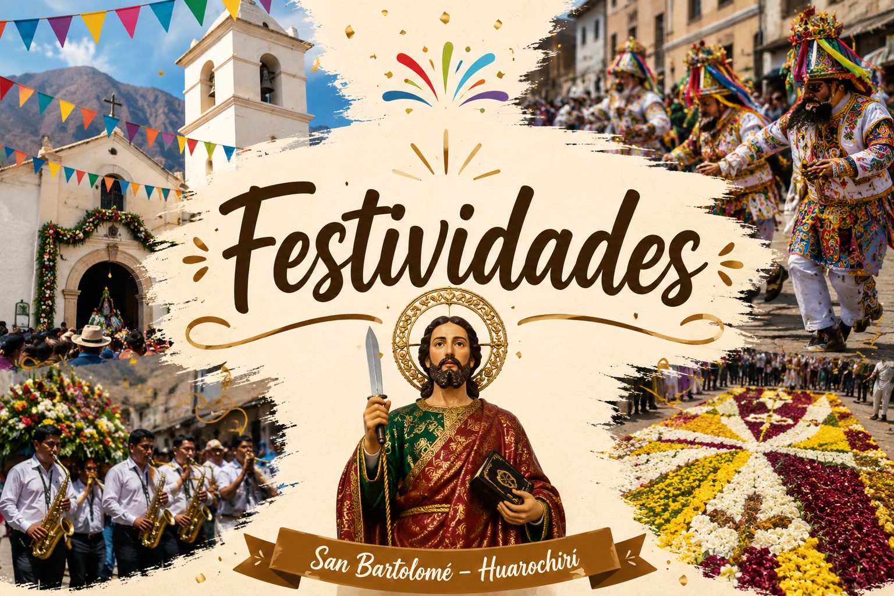

DESTINOSAtractivos turísticos
Conoce los lugares y paisajes que puedes visitar en San Bartolomé y descubre nuevos destinos.
Explorar lugaresDescubre todo lo que San Bartolomé tiene para ofrecerte. Explora lugares, conoce nuestra historia, disfruta de nuestra gastronomía y planifica tu próxima experiencia.
Elige una categoría y comienza a descubrir nuestra localidad.

DESTINOSConoce los lugares y paisajes que puedes visitar en San Bartolomé y descubre nuevos destinos.
Explorar lugares PATRIMONIO
PATRIMONIO
Viaja por la historia de San Bartolomé, conoce su patrimonio y descubre las raíces de nuestra localidad.
Conocer historia
SABORESDescubre productos, sabores y preparaciones que forman parte de la identidad local.
Descubrir sabores
AVENTURAEncuentra recorridos, caminatas y experiencias para disfrutar de los paisajes de San Bartolomé.
Ver rutas
TRADICIÓNConoce las celebraciones, costumbres y tradiciones que mantienen viva nuestra identidad.
Ver festividadesPregunta, descubre y recibe recomendaciones para planificar tu experiencia en San Bartolomé.
Hablar con TurisIACuéntanos qué tipo de experiencia estás buscando y te ayudaremos a descubrir San Bartolomé.